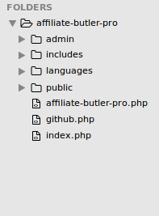
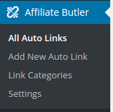
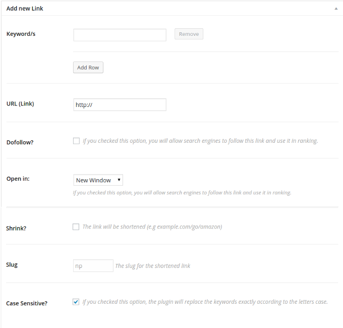

Thank you for purchasing my plugin. If you have any questions that are beyond the scope of this help file, please feel free to email via my user page contact form here. Thanks so much!
Affiliate Butler Pro is a WordPress plugin that helps you to replace specific keywords to links automatically. Are you tired of linking websites in your post? This plugin will solve your problem. Link your keywords once and forget about them. Are you an affiliate marketer, you don’t have to insert your affiliate links manually every time you write a blog post. Also, it has a link shortening feature to hide and protect your links. Replace the keywords with External and Internal URLs, Image, Gallery, Maps and Videos popups, and social media sharing tooltip.
Manage them in one place and create your own shortcuts via Keywords.
Simply go to Plugins page in admin panel and deactivate and delete the plugin.
This will remove your settings and now you can install the new version.
If you would like to store current settings do not deactivate it and just replace files.

If you extract downloaded ZIP file you should have this file structure. The main folder includes four subfolders and three PHP files.
admin includes folders and PHP files which responsible about the administration backend side.
includes contains five PHP classes files, they do critical tasks such as activation and deactivation hooks. and loading other classes to the environment.
public includes the assets folders of the front-end tasks such as JS files which have the code for popups and tooltip. Also, it includes the main class which handles the keywords converting process.
languages folder will store language files. MO files with appropriate name (e.g. affiliate-butler-pro-en_US.mo) should be located here.
affiliate-butler-pro.php contains main plugin class. Almost everything will be done or loaded here.
github.php This file will notify you to install the Envato Market plugin.
index.php Just an empty file to prevent a direct access to the plugin folder.

Affiliate Butler Pro provides lots of cool features and all are well-organized, self-explaining and easy to use.
If you finished the installation, a new menu item will be added to your administration menu. It's called "Affiliate Butler". Under this menu item, you will find all the plugin's related pages.
Note: The plugin will add a new custom post type called "Auto Link", Auto Link is simply the keyword/s which you want to auto-link them with one of the link types available by the plugin.
The submenu items are:
All Auto Links - Display all the Auto Links which you created before.
Add New Auto Link - Here you can add a new auto link.
Link Categories - If you have a lot of keywords you can organize them by categories, you can create/edit links categories from here.
Settings - The plugin's settings page where you can control the options of the plugin.
Affiliate Butler comes with several settings to make you take full control of the plugin, thus, I will add more settings to cope with the new features. I will add more and more features in the next releases, so stay tuned.
To access the settings page, Go to Affiliate Butler ↣ Settings.
Enable Auto Replacement: This option is a global switch for the plugin, If you want to disable the replacement of the keywords temporarily without deactivating the whole plugin, you just need to uncheck this option.
Dofollow? if you checked this option, you will allow search engines to follow this link and use it in ranking. It simply adds (rel=nofollow) if you unchecked it.
Open in When the visitor clicks on the link, it's either open in a new window or the same window.
Shrink? If you checked this option, the link will be shortened.
Case Sensitive? The plugin will replace the keywords exactly according to the letters case.
Auto Link Taxonomies? Auto link categories and taxonomies terms to their archive pages whenever they appear in posts or pages.
Limits Per Post Limit the number of times that the keyword will be converted to a link per post.
This is the table where you find all your links, from this page you can (edit, delete) the link. Also, It will show the keywords of the link, the original link. You can go to this page from the Admin Menu (Auto Links ↣ All Auto Links)
Add Auto Link
"Auto Links" ↣ "Add New Auto Link"

This is the main page where you will add the links with the keywords.
You can add one keyword or multiple keywords. To add another keyword, click on "Add Row" button and a text new text box will show up. Another keyword? click again on "Add Row"
Now Add the required URL, When the visitor clicks on the keyword that you previously added, the plugin will take him to this URL.
The other options I explained them in the Settings section
The last thing, There is an option called slug, This one is disabled by default, but if you chosen to "shrink" the link, this option will be activated with an auto-generated text, you can change it if you want.
To convert the keyword to external URL, follow these steps:
Go to your WordPress Dashboard.
Click on Affiliate Butler ↣ Add New Auto Link
Fill the keyword in the Keyword\s field
If you want to add another keyword, click on the "Add Row" button.
Change the "Link Type" select box value to "External".
Insert the external URL in the "URL (link)" field.
You can hit "Publish" now, but if you want to customize the link, see the following steps.
Add the "Link Title", this will add the "title" attribute in the link HTML.
Check the "DoFollow?" field if you want search engines to follow and rank this link.
Select whether you want the link to open in a new window or in the same window from the "Open in" field.
Check the "Shrink" field if you want to shorten the URL. This would be useful if you have a very long URL.
If you checked the "Shrink" field, you can customize the shortened URL slug in the "Slug" field.
Click on "Publish" in the right side of the screen.
2. Internal URL
To add an image popup to a specific keyword/s, follow these steps:
Go to your WordPress Dashboard.
Click on Affiliate Butler ↣ Add New Auto Link
Fill the keyword in the Keyword\s field
If you want to add another keyword, click on the "Add Row" button.
Change the "Link Type" select box value to "Internal".
At the "Internal URL (Link)" field, Start typing the title of the internal post or page which you want to make the keyword link point to when the post/page appears click on it.
You can hit "Publish" now, but if you want to customize the link, see the following steps.
Add the "Link Title", this will add the "title" attribute in the link HTML.
Select whether you want the link to open in a new window or in the same window from the "Open in" field.
Check the "Shrink" field if you want to shorten the URL. This would be useful if you have a very long URL.
If you checked the "Shrink" field, you can customize the shortened URL slug in the "Slug" field.
Click on "Publish" in the right side of the screen.
Watch the following video which illustrates the process.
3. Custom HTML Popup
To add a custom HTML popup to a specific keyword/s, follow these steps:
Go to your WordPress Dashboard.
Click on Affiliate Butler ↣ Add New Auto Link
Fill the keyword in the Keyword\s field
If you want to add another keyword, click on the "Add Row" button.
Change the "Link Type" select box value to "Popup".
The "Popup Content" editor field will appear, you can add your custom HTML in this field.
Click on "Publish" in the right side of the screen.
Watch the following video which illustrates the process.
4. Image Popup.
To add an image popup to a specific keyword/s, follow these steps:
Go to your WordPress Dashboard.
Click on Affiliate Butler ↣ Add New Auto Link
Fill the keyword in the Keyword\s field
If you want to add another keyword, click on the "Add Row" button.
Change the "Link Type" select box value to "Popup Image".
The "Popup Image" field will appear, click on "Upload Image" to choose the image of the popup.
Click on "Publish" in the right side of the screen.
Watch the following video which illustrates the process.
5. Gallery Popup
To add a gallery popup to a specific keyword/s, follow these steps:
Go to your WordPress Dashboard.
Click on Affiliate Butler ↣ Add New Auto Link
Fill the keyword in the Keyword\s field
If you want to add another keyword, click on the "Add Row" button.
Change the "Link Type" select box value to "Gallery Image".
The "Gallery images" field will appear, click on "Add or Upload Images" to choose the images of the gallery popup.
Click on "Publish" in the right side of the screen.
Watch the following video which illustrates the process.
6. Video Popup
To add a video popup to a specific keyword/s, follow these steps:
Go to your WordPress Dashboard.
Click on Affiliate Butler ↣ Add New Auto Link
Fill the keyword in the Keyword\s field
If you want to add another keyword, click on the "Add Row" button.
Change the "Link Type" select box value to "Popup Video".
Go to Youtube.com or Vimeo.com and copy the video URL from the address bar of your browser and paste it in the "Video URL" field.
Click on "Publish" in the right side of the screen.
Watch the following video which illustrates the process.
7. Google Maps Popup
To add a google maps popup to a specific keyword/s, follow these steps:
Go to your WordPress Dashboard.
Click on Affiliate Butler ↣ Add New Auto Link
Fill the keyword in the Keyword\s field
If you want to add another keyword, click on the "Add Row" button.
Change the "Link Type" select box value to "Google Map".
Go to https://google.com/maps and in the search box type the address of the location you want then hit enter. After that, copy the map URL from the address bar of your browser and paste it in the "Map URL" field.
Click on "Publish" in the right side of the screen.
Watch the following video which illustrates the process.
8. Social Media Sharing Tooltip
To add a social media sharing tooltip to a specific keyword/s, follow these steps:
Go to your WordPress Dashboard.
Click on Affiliate Butler ↣ Add New Auto Link
Fill the keyword in the Keyword\s field
If you want to add another keyword, click on the "Add Row" button.
Change the "Link Type" select box value to "Shared URL".
Paste the URL in the "Shared URL" field.
Paste the Text which you want to be added with the URL in the "Shared Text" field.
Click on "Publish" in the right side of the screen.
Watch the following video which illustrates the process.
Even if the link was external or a popup, the plugin will be able to track the link and provides you with many statistics (Visits per day, Countries, Browsers, Operating Systems and languages ). I will add more features in the statistics page in order to provide the plugin user of the maximum benefits of statistics and tracking.
To see the statistics, follow these steps:
Go to Affiliate Butler ↣ All Auto Links.
You can see how many clicks happened on the keyword, by the "Total Clicks" column.
At the "Keyword/s" column, if you move the mouse to the keyword you want, then click on "Stats Details". This will take you to the details of the clicks.
= How to disable the auto-linking for a specific post or page? =
Edit the Post/Page and you will find a met box called "Disable Affiliate Butler Pro for this post", then check the "disabled" checkbox and click update. This will disable the auto-linking for this post/page.
= How to limit the number of times a keyword would be converted per post/page? =
Go to Affiliate Butler ↣ Settings and add the number of times in the "Limits Per Post" field.
Do you have any problem? Did you encounter a bug in the plugin? Do you need a new feature to be included in the plugin? Do not hesitate to drop me a support ticket.
Once again, thank you so much for purchasing this item. As I said at the beginning, I'd be glad to help you if you have any questions relating to this plugin. No guarantees, but I'll do my best to assist. If you have a more general question relating to the themes on ThemeForest or plugins on CodeCanyon you might consider visiting the forums and asking your question in the "Item Discussion" section.